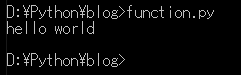
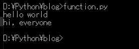
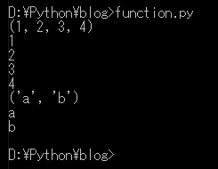
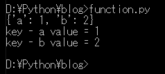
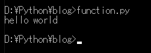
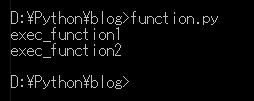
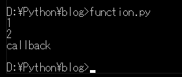
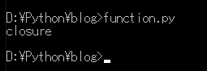
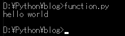
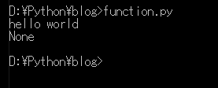

[Python] 06. 関数(function) - インライン関数、callbak、ラムダ(lambda)そしてクロージャ
こんにちは。明月です。
この投稿はPythonで関数(function) - インライン関数、callbak、ラムダ(lambda)そしてクロージャに関する説明です。
プログラムで変数と制御文を学ぶと次に学ぶのはこの関数ではないかと思います。
関数はPythonで一番小さい単位のコードだしコードを再使用ができる文法です。
関数の基本構造は下記通りになります。
# 関数宣言のキーワードはdefで始まる。次は関数名で小括弧でパラメータを指定する。
def print_data(param):
# コンソール出力
print(param)
#関数呼び出す。
print_data("hello world")

関数はdefで定義して最後にはコロン（:)を付けます。関数領域のはじめはインデントで区分します。インデントが終わるところが関数の末です。
パラメータは小括弧の中で定義します。関数を呼び出すところで値を受け取るところです。
Pythonで関数名を作成する方法は決めてないですが、コード標準では動詞+名詞の形式で作成するようにお勧めしています。他のプログラム言語と似ていますが、動詞、名詞の区分を大文字ではなくアンダーバーで区分します。
Pythonではパラメータを使う方法が二つあります。一つはパラメータ位置で値を渡す方法(一般的な方法)があり、キーワードでパラメータを渡す方法があります。
# 関数宣言 - パラメータは二つ
def print_data(param1, param2):
# コンソール出力
print(param1 + ' ' +param2)
# 位置でパラメータを渡す方法
print_data("hello","world")
# キーワードでパラメータを渡す方法
print_data(param2 = "everyone", param1 = "hi,")

そしてパラメータの個数を決めなく、可変的に設定することもできます。
# *マークを入れるとパラメータは可変になる。
def print_data(*param):
# コンソール出力
print(param)
# 繰り返し
for p in param:
# コンソール出力
print(p)
# パラメータに四個を入れる。
print_data(1,2,3,4)
# パラメータに二つを入れる。
print_data("a","b")

結果をみれば可変パラメータはタプルタイプになります。
パラメータをディクショナリタイプで渡すこともできます。
# *マークを二つに入れればディクショナリタイプのパラメータになる。
def print_data(**param):
# コンソール出力
print(param)
# 繰り返し
for p in param:
# コンソール出力
print("key - " + p + " value = " + str(param[p]))
# キーワードでパラメータを渡す。
print_data(a=1,b=2)

PythonはJavascriptと似ている文法が多いです。
インライン関数で関数の中の関数を設定することができます。
# 関数宣言
def get_function():
# 関数の中で関数を宣言する。
def exec_function():
# コンソール出力
print("hello world")
# インライン関数を呼び出す。
exec_function()
# get_function関数を呼び出すとexec_function関数を生成して呼び出す。
get_function()

関数をオブジェクトタイプで設定することもできます。
# 関数宣言
def get_function(param):
# インライン関数
def exec_function1():
# コンソール出力
print("exec_function1")
# インライン関数
def exec_function2():
# コンソール出力
print("exec_function2")
# paramが1の値ならret変数にexec_function2関数を入れる。(関数がオブジェクトみたいに返却ができる。)
if param == 1:
# 返却値を設定
ret = exec_function1
# paramが1ではない値ならret変数にexec_function2関数を入れる。(関数がオブジェクトみたいに返却ができる。)
else:
# 返却値を設定
ret = exec_function2
# 返却
return ret
# インライン関数のexec_function1を受け取る。
func = get_function(1)
# 呼び出す。
func()
# インライン関数のexec_function2を受け取る。
func = get_function(2)
# 呼び出す。
func()

get_functionの中で関数をリターンしました。Javascriptの経験がある方ならどの意味か分かると思います。
callbackはデザインパターンでvisitパターンで関数をパラメータで渡す意味です。
# 関数宣言
def get_function(param, cb = None):
# コンソール出力
print(param)
# isinstance関数で関数を確認することがありますが、importをしなくて簡単に使う方法で作成した。
# cbがNoneではなく、タイプがfunctionの場合にcbを呼び出す。
if cb != None and str(type(cb)) == "<class 'function'>":
# 関数を呼び出す。
cb()
# callback関数
def callback():
# コンソール出力
print("callback")
# callbackなしで関数を呼び出す。
get_function(1)
# callbackを入れて関数を呼び出す。
get_function(2,callback)

Javascriptみたいにcallback関数が作成されました。やはり、スクリプト言語なので似ている文法が多いです。
参考にNoneのキーワードは他のプログラム言語だとnullと同じ意味です。
この頃になるとJavascriptみたいにクロージャやラムダ(lambda)があるか知りたくなります。Pythonもクロージャがあるしラムダ(lambda)があります。
クロージャ機能は関数の中で宣言したデータではなく、外部で宣言したデータを持ち込んで使う方法ということです。
# 関数宣言
def call_function():
# 変数宣言
data = "closure";
# インライン関数
def inline_function():
# inline_function関数なかはdataを宣言しなかった。
# 上位関数call_function에でdataの変数があるが、クロージャ機能で持ち込んで使うことができる。
print(data);
# インライン関数を呼び出す。
inline_function();
# 関数を呼び出す。
call_function();

それならラムダ(lambda)式はどのように実装できましょうか？
# 関数宣言。
def call_function(param, func):
# 関数判明
if func != None and str(type(func)) == "<class 'function'>":
# 呼び出す。
func(param);
# lambdaというキーワードを使ってパラメータを設定し、コロン(:)の後で実行式を作成する。
call_function("hello world", lambda p: print(p));

lambdaの作成方法はコンプリヘンションと似ています。if elseを作成する時にはifは前、elseは後の式が実行されます。
# 関数宣言
def call_function(param, func):
# 関数判明
if func != None and str(type(func)) == "<class 'function'>":
# 呼び出す。
func(param);
# pの値がNoneならNoneを出力する。ではなければ値を出力する。
Anonymous = lambda p: print(p) if p != None else print("None");
# 呼び出す。
call_function("hello world", Anonymous);
call_function(None, Anonymous);

ここまでPythonで関数(function) - インライン関数、callbak、ラムダ(lambda)そしてクロージャに関する説明でした。
ご不明なところや間違いところがあればコメントしてください。
- [Python] 08. ジェネレータ(Generator)2020/06/04 18:46:08
- [Python] 07. globalとnonlocal2020/06/03 20:34:49
- [Python] 06. 関数(function) - インライン関数、callbak、ラムダ(lambda)そしてクロージャ2020/06/02 20:51:22
- [Python] 05. コンプリヘンション(Comprehension)を使用する方法2020/06/01 19:38:58
- [Python] 04. 制御文(if, while, for, break, continue)とインデント2020/05/29 21:09:08
- [Python] 03. Pythonでリスト(list)とタプル(tuple)、そしてディクショナリ(dictionary)、セット(set)2020/05/27 18:49:08
- [Python] 02. データタイプ、変数宣言そしてコメントする方法2020/05/26 18:16:52
- [Python] 01. Python3をインストールする方法(Anacondaインストール)2020/05/25 19:02:44
- [Python] 08. ジェネレータ(Generator)2020/06/04 18:46:08
- [Python] 07. globalとnonlocal2020/06/03 20:34:49
- [Python] 06. 関数(function) - インライン関数、callbak、ラムダ(lambda)そしてクロージャ2020/06/02 20:51:22
- [Python] 05. コンプリヘンション(Comprehension)を使用する方法2020/06/01 19:38:58
- [Python] 04. 制御文(if, while, for, break, continue)とインデント2020/05/29 21:09:08
- [Python] 03. Pythonでリスト(list)とタプル(tuple)、そしてディクショナリ(dictionary)、セット(set)2020/05/27 18:49:08
- [Python] 02. データタイプ、変数宣言そしてコメントする方法2020/05/26 18:16:52
- [Python] 01. Python3をインストールする方法(Anacondaインストール)2020/05/25 19:02:44
- [Java] HttpConnectionを利用してウェブページを取得する方法2020/05/20 23:53:24
- [Java] Jsoupを利用してXMLファイル(HTML)を扱う方法2020/05/19 19:32:21
- [C#] 非同期ソケット通信(IOCP)-APMパターン2020/05/18 18:45:37
- [C#] 非同期ソケット通信(IOCP)-EAPパターン2020/05/15 19:31:02
- [C#] ソケット(Socket)通信をする方法2020/05/13 17:37:13
- [C#] NPOIを利用してExcelを読み込んで出力する方法2020/05/08 10:43:52
- [C#] NPOIライブラリを利用してエクセルファイルを生成する方法2020/05/07 01:49:01